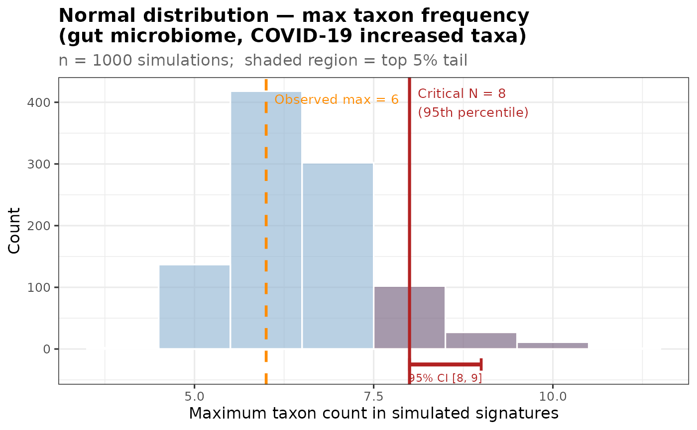
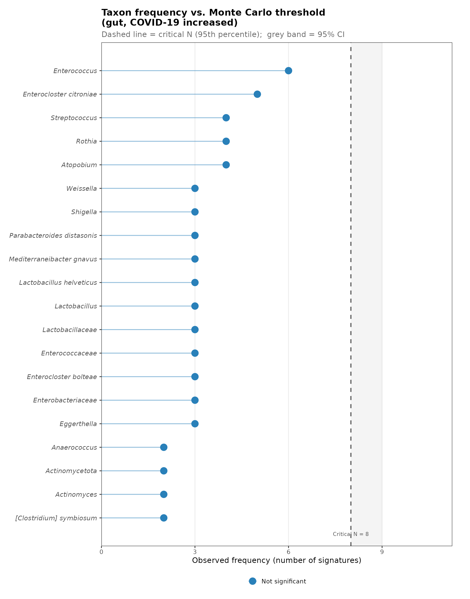
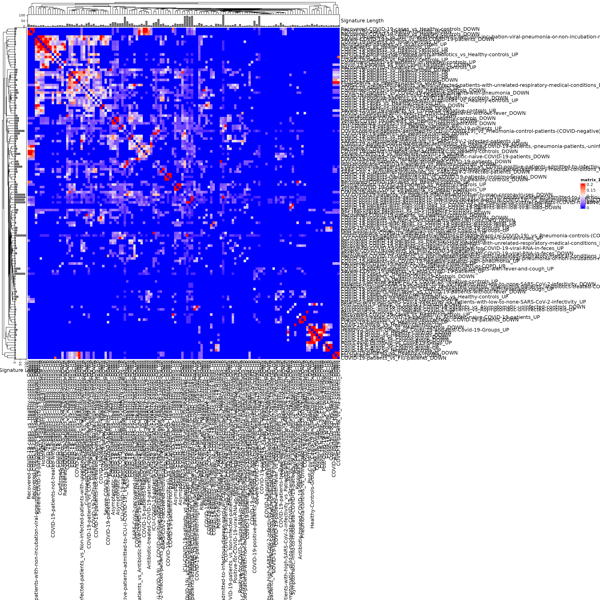
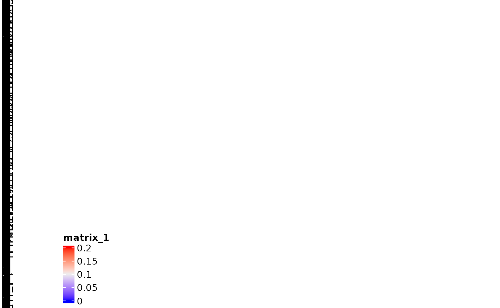
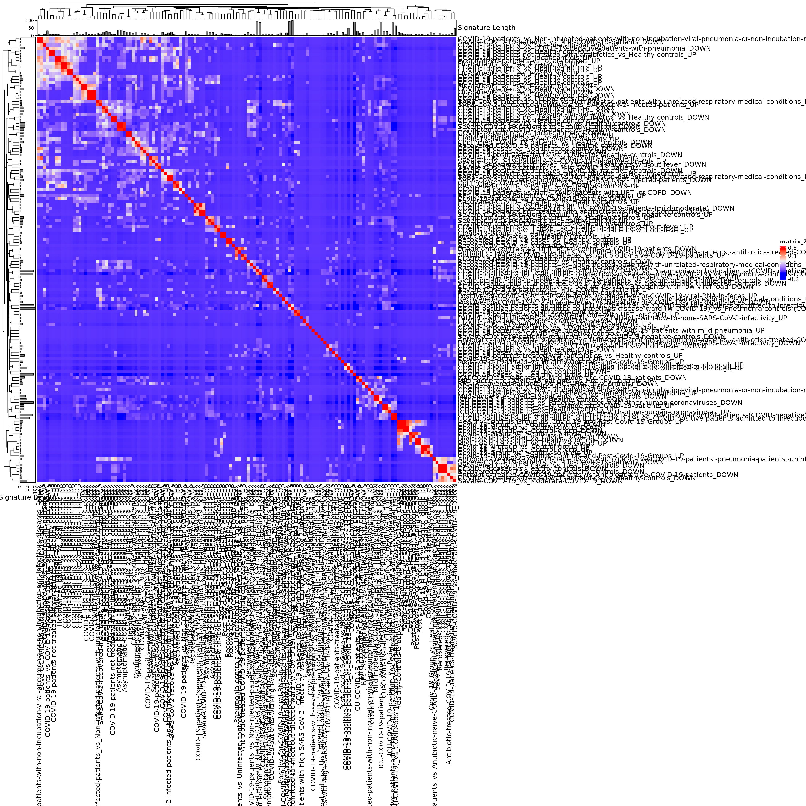
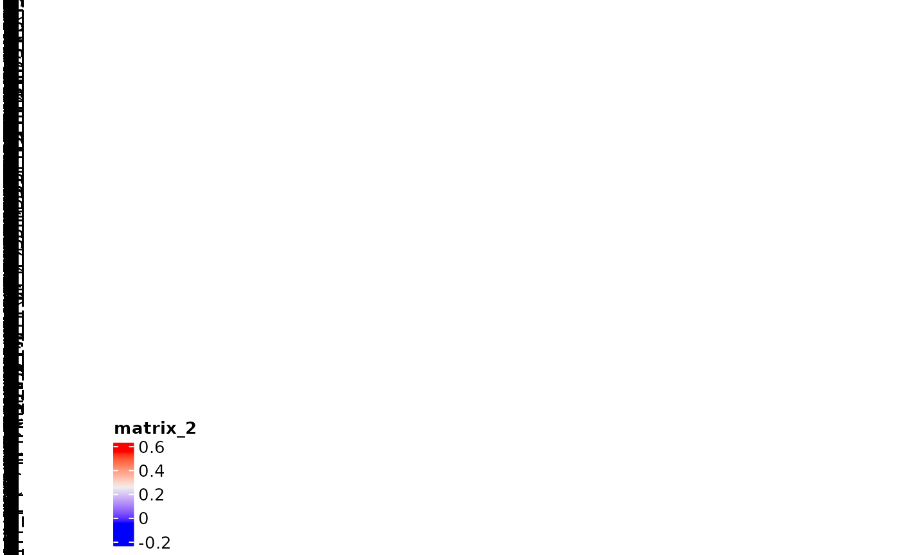

COVID-19 associated microbiome
Clare Grieve
09 November, 2026
Source:vignettes/capstoneanalysis_clare.rmd
capstoneanalysis_clare.rmdAnalysis objectives
- Import, recode, and subset data from bugsigdb.org
- Create a table of studies
- Create a clustered heatmap showing similarity of signatures from independent studies
- Calculate the frequency of appearance of each taxa in independent signatures, and identify the most frequently reported taxa
- Estimate the probability of the most frequently identified taxa occuring so frequently by chance
Packages installation
Install packages (not evaluated in vignette)
install.packages(c("devtools", "tidyverse", "kableExtra", "gt", "glue"))
devtools::install_github("waldronlab/bugSigSimple")
devtools::install_github("waldronlab/BugSigDBStats")
devtools::install_github("waldronlab/bugsigdbr")Data import, recoding, and subset
library(bugSigSimple)
dat <- bugsigdbr::importBugSigDB(cache = TRUE) ## Using cached version from 2026-11-09 16:29:54
dim(dat)## [1] 7425 51
names(dat)## [1] "BSDB ID" "Study"
## [3] "Study design" "PMID"
## [5] "DOI" "URL"
## [7] "Authors list" "Title"
## [9] "Journal" "Year"
## [11] "Keywords" "Experiment"
## [13] "Location of subjects" "Host species"
## [15] "Body site" "UBERON ID"
## [17] "Condition" "EFO ID"
## [19] "Group 0 name" "Group 1 name"
## [21] "Group 1 definition" "Group 0 sample size"
## [23] "Group 1 sample size" "Antibiotics exclusion"
## [25] "Sequencing type" "16S variable region"
## [27] "Sequencing platform" "Data transformation"
## [29] "Statistical test" "Significance threshold"
## [31] "MHT correction" "LDA Score above"
## [33] "Matched on" "Confounders controlled for"
## [35] "Pielou" "Shannon"
## [37] "Chao1" "Simpson"
## [39] "Inverse Simpson" "Richness"
## [41] "Signature page name" "Source"
## [43] "Curated date" "Curator"
## [45] "Revision editor" "Description"
## [47] "Abundance in Group 1" "MetaPhlAn taxon names"
## [49] "NCBI Taxonomy IDs" "State"
## [51] "Reviewer"## ── Attaching core tidyverse packages ──────────────────────── tidyverse 2.0.0 ──
## ✔ dplyr 1.2.1 ✔ readr 2.2.0
## ✔ forcats 1.0.1 ✔ stringr 1.6.0
## ✔ ggplot2 4.0.3 ✔ tibble 3.3.1
## ✔ lubridate 1.9.5 ✔ tidyr 1.3.2
## ✔ purrr 1.2.2
## ── Conflicts ────────────────────────────────────────── tidyverse_conflicts() ──
## ✖ dplyr::filter() masks stats::filter()
## ✖ dplyr::lag() masks stats::lag()
## ℹ Use the conflicted package (<http://conflicted.r-lib.org/>) to force all conflicts to become errors
efo <- bugsigdbr::getOntology("efo")## Loading required namespace: ontologyIndex
## Using cached version from 2026-11-09 16:21:56
covid_all <- bugsigdbr::subsetByOntology(dat, column = "Condition", "COVID-19", efo) %>%
mutate(studyexp = paste(Study, Experiment, sep = "_")) %>%
mutate(
site = recode(`Body site`,
"Feces" = "Gut",
"Rectum" = "Gut",
"Nasopharynx" = "aURT",
"Oropharynx" = "aURT",
"Nasopharynx,Oropharynx" = "aURT",
"Nasal cavity" = "aURT",
"Surface of tongue" = "aURT",
"Nasopharynx,Throat" = "aURT",
"Throat" = "aURT",
"Tongue" = "aURT",
"Lung" = "LRT",
"Sputum" = "LRT"
)
) %>%
mutate(comparison1 = paste(`Group 0 name`, `Group 1 name`, sep = " vs "))Table of studies
bugSigSimple::createStudyTable(covid_all)## # A tibble: 34 × 9
## `Study Identifier` MaxCases MaxControls `Study design` Condition N_signatures
## <chr> <dbl> <dbl> <chr> <chr> <int>
## 1 BellatoM._2023 89 17 cross-section… COVID-19… 1
## 2 CaoJ._2021 13 8 case-control COVID-19 6
## 3 EngenP.A._2021 9 10 cross-section… COVID-19 2
## 4 GaibaniP._2021 24 24 case-control COVID-19 2
## 5 GaoM._2021 94 48 prospective c… COVID-19 2
## 6 GuptaA._2021 63 26 cross-section… COVID-19 2
## 7 HanY._2022 19 23 cross-section… COVID-19 2
## 8 HoqueM.N._2021 11 10 case-control COVID-19 2
## 9 HuX._2023 132 203 prospective c… COVID-19 16
## 10 KhanM._2021 10 10 cross-section… COVID-19 6
## # ℹ 24 more rows
## # ℹ 3 more variables: PMID <chr>, DOI <chr>, URL <chr>Taxon frequency tables by body site
library(dplyr)
gut_sigs <- filter(covid_all,
site == "Gut") %>%
drop_na(Source)
naso_sigs <- filter(covid_all,
site == "aURT") %>%
drop_na(Source)
resp_sigs <- filter(covid_all,
site == "LRT") %>%
drop_na(Source)In this table, the Binomial Test p-value corresponds to the null hypothesis
H0: the proportion of signatures in which the taxon is reported increased or decreased, relative to the total number of signatures in which it is reported, is equal to 0.5
kableExtra::kbl(bugSigSimple::createTaxonTable(gut_sigs))| Taxon Name | Taxonomic Level | total_signatures | increased_signatures | decreased_signatures | Binomial Test pval |
|---|---|---|---|---|---|
| Faecalibacterium | genus | 11 | 1 | 10 | 0.0120 |
| Faecalibacterium prausnitzii | species | 10 | 0 | 10 | 0.0020 |
| Anaerostipes | genus | 10 | 3 | 7 | 0.3400 |
| Blautia obeum | species | 10 | 0 | 10 | 0.0020 |
| Enterococcus | genus | 9 | 9 | 0 | 0.0039 |
| Collinsella aerofaciens | species | 8 | 2 | 6 | 0.2900 |
| Clostridium | genus | 8 | 3 | 5 | 0.7300 |
| Subdoligranulum | genus | 8 | 1 | 7 | 0.0700 |
| Dorea longicatena | species | 8 | 1 | 7 | 0.0700 |
| Roseburia | genus | 8 | 0 | 8 | 0.0078 |
kableExtra::kbl(bugSigSimple::createTaxonTable(naso_sigs))| Taxon Name | Taxonomic Level | total_signatures | increased_signatures | decreased_signatures | Binomial Test pval |
|---|---|---|---|---|---|
| Veillonella | genus | 12 | 9 | 3 | 0.150 |
| Oribacterium | genus | 10 | 2 | 8 | 0.110 |
| Prevotella | genus | 10 | 4 | 6 | 0.750 |
| Streptococcus | genus | 9 | 2 | 7 | 0.180 |
| Haemophilus | genus | 9 | 1 | 8 | 0.039 |
| Filifactor | genus | 8 | 1 | 7 | 0.070 |
| Megasphaera | genus | 7 | 6 | 1 | 0.130 |
| Raffaelea | genus | 7 | 5 | 2 | 0.450 |
| Alloprevotella | genus | 7 | 4 | 3 | 1.000 |
| Neisseria | genus | 7 | 0 | 7 | 0.016 |
kableExtra::kbl(bugSigSimple::createTaxonTable(resp_sigs))| Taxon Name | Taxonomic Level | total_signatures | increased_signatures | decreased_signatures | Binomial Test pval |
|---|---|---|---|---|---|
| Rothia mucilaginosa | species | 2 | 1 | 1 | 1 |
| Lachnoclostridium phytofermentans | species | 2 | 1 | 1 | 1 |
| Actinomyces | genus | 1 | 0 | 1 | 1 |
| Actinomyces pacaensis | species | 1 | 1 | 0 | 1 |
| Schaalia meyeri | species | 1 | 1 | 0 | 1 |
| Rothia aeria | species | 1 | 1 | 0 | 1 |
| Atopobium | genus | 1 | 0 | 1 | 1 |
| Bacillus cereus | species | 1 | 1 | 0 | 1 |
| Lysinibacillus sp. B2A1 | species | 1 | 1 | 0 | 1 |
| Lysinibacillus sphaericus | species | 1 | 1 | 0 | 1 |
gut microbiota analysis
Look specifically at case-control comparisons
healthy <- grepl(".*(healthy.*COVID|COVID.*healthy).*", gut_sigs$comparison1, ignore.case = TRUE)
cc_gut_sigs1 <- gut_sigs %>%
filter(healthy == TRUE) Overall frequencies of taxa increased in cases for case/control feces studies
Identifying a taxon reported consistently in 8 out of 8 studies is much more compelling that the FDR value here would suggest, since this taxon also passed a significance threshold in every one of those studies.
cc_gut_sigs1_taxontable <- bugSigSimple::createTaxonTable(cc_gut_sigs1) %>%
mutate(FDR = p.adjust(p = `Binomial Test pval`, method="fdr")) %>%
relocate(FDR, .after = `Binomial Test pval`)
kableExtra::kbl(cc_gut_sigs1_taxontable)| Taxon Name | Taxonomic Level | total_signatures | increased_signatures | decreased_signatures | Binomial Test pval | FDR |
|---|---|---|---|---|---|---|
| Blautia obeum | species | 7 | 0 | 7 | 0.016 | 0.0620000 |
| Enterococcus | genus | 6 | 6 | 0 | 0.031 | 0.0620000 |
| Lactobacillaceae | family | 6 | 3 | 3 | 1.000 | 1.0000000 |
| Clostridium | genus | 6 | 2 | 4 | 0.690 | 0.7666667 |
| Faecalibacterium | genus | 6 | 0 | 6 | 0.031 | 0.0620000 |
| Ruminococcus | genus | 6 | 1 | 5 | 0.220 | 0.2750000 |
| Coprococcus | genus | 6 | 0 | 6 | 0.031 | 0.0620000 |
| Roseburia | genus | 6 | 0 | 6 | 0.031 | 0.0620000 |
| Faecalibacterium prausnitzii | species | 5 | 0 | 5 | 0.062 | 0.0885714 |
| Ruminococcus bromii | species | 5 | 0 | 5 | 0.062 | 0.0885714 |
Monte-Carlo simulation for increased abundance taxa
Just for the increased cc_gut_sigs1 for now. I am inclined to skip this analysis in favor of the clustering and binomial test analysis.
#library(bugSigSimple)
#gut.sigs.increased <- filter(cc_gut_sigs1, `Abundance in Group 1` == "increased") %>%
# bugsigdbr::getSignatures(tax.id.type = "taxname")
# my.siglengths.inc <- sapply(gut.sigs.increased, length)
#getCriticalN(gut.sigs.increased, my.siglengths.inc)
# Compare to observed - enterococcus & streptococcus are the only taxa that equal the critical limit
#frequencySigs(gut.sigs.increased)
library(bugSigSimple)
library(ggplot2)
gut.sigs.increased <- filter(cc_gut_sigs1, `Abundance in Group 1` == "increased") %>%
bugsigdbr::getSignatures(tax.id.type = "taxname")
my.siglengths.inc <- sapply(gut.sigs.increased, length)
cn_res <- getCriticalN(
relevant.sigs = gut.sigs.increased,
siglengths = my.siglengths.inc,
alpha = 0.05,
nsim = 1000,
ci = 0.95,
ci_nsim = 500
)
cat(sprintf(
"Critical N (%s): %d\n95%% CI: [%d, %d]\n",
cn_res$quantile_label,
round(cn_res$critical_n),
round(cn_res$ci_lower),
round(cn_res$ci_upper)
))## Critical N (95th percentile): 8
## 95% CI: [8, 9]
shapiro.test(cn_res$simulated_values)##
## Shapiro-Wilk normality test
##
## data: cn_res$simulated_values
## W = 0.8844, p-value < 2.2e-16
obs_max <- max(table(unlist(gut.sigs.increased)))
plotCriticalN(
cn_result = cn_res,
obs_max = obs_max,
title = "Normal distribution — max taxon frequency\n(gut microbiome, COVID-19 increased taxa)"
)
sig_df <- significantTaxa(
sigs = gut.sigs.increased,
cn_result = cn_res,
n = 20,
plot = FALSE, # suppress internal plot so we can correct significance first
plot_type = "lollipop",
title = "Taxon frequency vs. Monte Carlo threshold\n(gut, COVID-19 increased)"
)
cat("Critical N value: ", cn_res$critical_n, "\n")## Critical N value: 8## Max observed count: 6## taxon count critical_n
## 1 Enterococcus 6 8
## 2 Enterocloster citroniae 5 8
## 3 Atopobium 4 8
## 4 Rothia 4 8
## 5 Streptococcus 4 8
## 6 Eggerthella 3 8
## 7 Enterobacteriaceae 3 8
## 8 Enterocloster bolteae 3 8
## 9 Enterococcaceae 3 8
## 10 Lactobacillaceae 3 8
## 11 Lactobacillus 3 8
## 12 Lactobacillus helveticus 3 8
## 13 Mediterraneibacter gnavus 3 8
## 14 Parabacteroides distasonis 3 8
## 15 Shigella 3 8
## 16 Weissella 3 8
## 17 [Clostridium] symbiosum 2 8
## 18 Actinomyces 2 8
## 19 Actinomycetota 2 8
## 20 Anaerococcus 2 8
# Correct significance flag from > to >= to include taxa that meet the threshold
sig_df$significant <- sig_df$count >= sig_df$critical_n
cat("\nSignificant taxa:\n")##
## Significant taxa:## [1] taxon count critical_n significant
## <0 rows> (or 0-length row.names)
# Re-order factor for clean top-to-bottom ranking
sig_df$taxon <- factor(sig_df$taxon, levels = sig_df$taxon[order(sig_df$count)])
# Now render the lollipop plot with corrected significance
ggplot(sig_df, aes(x = count, y = taxon, colour = factor(significant))) +
annotate("rect",
xmin = cn_res$ci_lower, xmax = cn_res$ci_upper,
ymin = -Inf, ymax = Inf,
fill = "grey70", alpha = 0.15) +
geom_vline(xintercept = cn_res$critical_n,
linetype = "dashed", colour = "grey30", linewidth = 0.8) +
geom_segment(aes(x = 0, xend = count, yend = taxon),
linewidth = 0.7, alpha = 0.5) +
geom_point(size = 5) +
geom_text(data = subset(sig_df, significant),
aes(label = paste0("p = ", signif(p_empirical, 2))),
hjust = -0.25, size = 3.5, colour = "#c0392b", fontface = "bold") +
annotate("text",
x = cn_res$critical_n, y = 0.4,
label = paste0("Critical N = ", round(cn_res$critical_n)),
hjust = 0.5, vjust = 1, size = 3.2, colour = "grey30") +
scale_colour_manual(
values = c("FALSE" = "#2980b9", "TRUE" = "#c0392b"),
labels = c("FALSE" = "Not significant",
"TRUE" = paste0("Significant (>= Critical N = ",
round(cn_res$critical_n), ")")),
name = NULL
) +
scale_x_continuous(expand = expansion(mult = c(0, 0.25))) +
scale_y_discrete(expand = expansion(add = c(1.2, 1.2))) +
labs(
title = "Taxon frequency vs. Monte Carlo threshold\n(gut, COVID-19 increased)",
subtitle = paste0("Dashed line = critical N (", cn_res$quantile_label,
"); grey band = 95% CI"),
x = "Observed frequency (number of signatures)",
y = NULL
) +
theme_bw(base_size = 13) +
theme(
legend.position = "bottom",
plot.title = element_text(face = "bold"),
plot.subtitle = element_text(colour = "grey40"),
axis.text.y = element_text(
size = 11,
face = ifelse(levels(sig_df$taxon) %in%
sig_df$taxon[sig_df$significant],
"bold.italic", "italic"),
margin = margin(r = 4)
),
panel.grid.major.y = element_blank(),
panel.grid.minor = element_blank(),
plot.margin = margin(t = 15, r = 30, b = 15, l = 15)
)## Warning: Vectorized input to `element_text()` is not officially supported.
## ℹ Results may be unexpected or may change in future versions of ggplot2.
# Print the significance table (significant taxa first)
kableExtra::kbl(
sig_df,
col.names = c("Taxon", "Observed count", "Critical N",
"Significant", "Empirical p-value"),
digits = 3,
caption = "Top 20 taxa: observed frequency vs. Monte Carlo threshold"
) %>%
kableExtra::kable_styling(bootstrap_options = c("striped", "hover")) %>%
kableExtra::row_spec(
which(sig_df$significant),
bold = TRUE,
background = "#fde8e8"
)| Taxon | Observed count | Critical N | Significant | Empirical p-value |
|---|---|---|---|---|
| Enterococcus | 6 | 8 | FALSE | 0.861 |
| Enterocloster citroniae | 5 | 8 | FALSE | 0.998 |
| Atopobium | 4 | 8 | FALSE | 1.000 |
| Rothia | 4 | 8 | FALSE | 1.000 |
| Streptococcus | 4 | 8 | FALSE | 1.000 |
| Eggerthella | 3 | 8 | FALSE | 1.000 |
| Enterobacteriaceae | 3 | 8 | FALSE | 1.000 |
| Enterocloster bolteae | 3 | 8 | FALSE | 1.000 |
| Enterococcaceae | 3 | 8 | FALSE | 1.000 |
| Lactobacillaceae | 3 | 8 | FALSE | 1.000 |
| Lactobacillus | 3 | 8 | FALSE | 1.000 |
| Lactobacillus helveticus | 3 | 8 | FALSE | 1.000 |
| Mediterraneibacter gnavus | 3 | 8 | FALSE | 1.000 |
| Parabacteroides distasonis | 3 | 8 | FALSE | 1.000 |
| Shigella | 3 | 8 | FALSE | 1.000 |
| Weissella | 3 | 8 | FALSE | 1.000 |
| [Clostridium] symbiosum | 2 | 8 | FALSE | 1.000 |
| Actinomyces | 2 | 8 | FALSE | 1.000 |
| Actinomycetota | 2 | 8 | FALSE | 1.000 |
| Anaerococcus | 2 | 8 | FALSE | 1.000 |
Overall frequencies of taxa decreased in cases for case/control feces studies
createTaxonTable(cc_gut_sigs1, n=40)Cluster analysis
Note, this EDA should really be done before hypothesis testing.
First calculate pairwise overlaps for all signatures of length > 1:
allsigs <- bugsigdbr::getSignatures(covid_all, tax.id.type = "taxname")
allsigs <- allsigs[sapply(allsigs, length) > 1] #require length > 1
dim(allsigs)## NULL
mydists <- BugSigDBStats::calcPairwiseOverlaps(allsigs)
dim(mydists)## [1] 1850 8Create a matrix of Jaccard similarities (0 for no overlap, 1 for 100% overlap)
jmat <- BugSigDBStats::calcJaccardSimilarity(allsigs)## Loading required package: grid## ========================================
## ComplexHeatmap version 2.28.0
## Bioconductor page: http://bioconductor.org/packages/ComplexHeatmap/
## Github page: https://github.com/jokergoo/ComplexHeatmap
## Documentation: http://jokergoo.github.io/ComplexHeatmap-reference
##
## If you use it in published research, please cite either one:
## - Gu, Z. Complex Heatmap Visualization. iMeta 2022.
## - Gu, Z. Complex heatmaps reveal patterns and correlations in multidimensional
## genomic data. Bioinformatics 2016.
##
##
## The new InteractiveComplexHeatmap package can directly export static
## complex heatmaps into an interactive Shiny app with zero effort. Have a try!
##
## This message can be suppressed by:
## suppressPackageStartupMessages(library(ComplexHeatmap))
## ========================================
siglengths <- sapply(allsigs, length)
ha <- HeatmapAnnotation(`Signature Length` = anno_barplot(siglengths))
hr <- rowAnnotation(`Signature Length` = anno_barplot(siglengths))
hm <- Heatmap(
jmat,
top_annotation = ha, left_annotation = hr,
row_names_max_width = unit(20, "cm"),
column_names_max_height = unit(20, "cm"),
row_labels = sub(".+:", "", rownames(jmat)),
column_labels = sub(".+:", "", colnames(jmat))
)## The automatically generated colors map from the 1^st and 99^th of the
## values in the matrix. There are outliers in the matrix whose patterns
## might be hidden by this color mapping. You can manually set the color
## to `col` argument.
##
## Use `suppressMessages()` to turn off this message.
hm
Use this interactively to make an interactive heatmap (not evaluated in vignette). Some expanding of the default size is required to see anything. Creating a sub-heatmap, then exporting it as a table, allows in-depth identification of the subgroups.
#library(InteractiveComplexHeatmap)
#hm <- draw(hm)
#htShiny(hm)## ========================================
## InteractiveComplexHeatmap version 1.20.0
## Bioconductor page: http://bioconductor.org/packages/InteractiveComplexHeatmap/
## Github page: https://github.com/jokergoo/InteractiveComplexHeatmap
##
## If you use it in published research, please cite:
## Gu, Z. Make Interactive Complex Heatmaps in R, 2021, Bioinformatics
##
## This message can be suppressed by:
## suppressPackageStartupMessages(library(InteractiveComplexHeatmap))
## ========================================
ht_jaccard <- draw(
hm,
heatmap_legend_side = "bottom",
annotation_legend_side = "bottom"
)
htShiny(
ht_jaccard,
width1 = 1000, # main heatmap panel width (px)
height1 = 1000, # main heatmap panel height (px)
width2 = 400, # sub-heatmap panel width (px)
height2 = 400 # sub-heatmap panel height (px)
)This tree can be cut to show the clusters, for example. The clusters of more than 1 signature but less than ~10 signatures are most likely to be something interesting.
## [[1]]
## [1] "bsdb:32442562/1/1_COVID-19:Antibiotic-naive-COVID-19-patients_vs_Uninfected-controls,-pneumonia-patients,-antibiotics-treated-COVID-19-patients_UP"
## [2] "bsdb:32442562/2/1_COVID-19:Antibiotic-treated-COVID-19-patients_vs_Antibiotic-naive-COVID-19-patients,-pneumonia-patients,-uninfected-controls_DOWN"
## [3] "bsdb:32690600/1/1_COVID-19:Patients-with-high-SARS-CoV-2-infectivity_vs_Patients-with-low-to-none-SARS-CoV-2-infectivity_DOWN"
## [4] "bsdb:32690600/1/2_COVID-19:Patients-with-high-SARS-CoV-2-infectivity_vs_Patients-with-low-to-none-SARS-CoV-2-infectivity_UP"
## [5] "bsdb:33431578/1/1_COVID-19:COVID-19-cases_vs_Healthy-controls_UP"
## [6] "bsdb:33431578/2/1_COVID-19:Recovered-COVID-19-cases_vs_Healthy-controls_UP"
## [7] "bsdb:33577896/1/2_COVID-19:Symptomatic,-mild-to-moderate-COVID-19-patients_vs_Asymptomatic-uninfected-controls_DOWN"
## [8] "bsdb:33596245/2/1_COVID-19:COVID-positive-patients-admitted-to-ICU-(i-COVID-19)_vs_COVID-positive-patients-admitted-to-infectious-disease-ward-(w-COVID-19)_UP"
## [9] "bsdb:33672177/4/2_COVID-19:ICU-COVID-19-patients_vs_Patients-infected-with-other-human-coronaviruses_UP"
## [10] "bsdb:33678150/1/2_COVID-19:COVID-19-patients_vs_Healthy-controls_DOWN"
## [11] "bsdb:33789966/1/2_COVID-19:Confirmed-COVID-19-patients_vs_Healthy-controls_UP"
## [12] "bsdb:33850111/1/1_COVID-19:Severe-COVID-19-patients_vs_Mild-COVID-19-patients_DOWN"
## [13] "bsdb:33977168/1/2_COVID-19:COVID-19-patients_vs_Non-COVID-patients-with-URTI-or-COPD_DOWN"
## [14] "bsdb:33978940/1/1_COVID-19:COVID-19-positive-patients_vs_COVID-19-negative-patients-with-fever-and-cough_UP"
## [15] "bsdb:33980943/1/1_COVID-19:COVID-19-patients_vs_COVID-19-negative-patients-with-pneumonia_UP"
## [16] "bsdb:33986253/3/2_COVID-19:Flu-patients_vs_Healthy-controls_DOWN"
## [17] "bsdb:34058978/1/2_COVID-19:COVID-19-positive-patients_vs_COVID-19-negative-controls_UP"
## [18] "bsdb:34100340/3/1_COVID-19:Recovered-COVID-19-patients_vs_Non-infected-patients-with-unrelated-respiratory-medical-conditions_UP"
## [19] "bsdb:34100340/4/1_COVID-19:Positive-for-COVID-19-viral-RNA-in-feces_vs_Negative-for-COVID-19-viral-RNA-in-feces_UP"
## [20] "bsdb:34151035/1/1_COVID-19:COVID-19-patients_vs_Non-COVID-19-controls_DOWN"
## [21] "bsdb:34168484/1/1_COVID-19:COVID-19-patients-with-fever_vs_COVID-19-patients-without-fever_UP"
## [22] "bsdb:34294722/3/2_COVID-19:COVID-19-patients-not-treated-with-antibiotics_vs_Healthy-controls_DOWN"
## [23] "bsdb:35411293/1/2_COVID-19:COVID-19-cases_vs_Healthy-controls_DOWN"
## [24] "bsdb:37119437/1/1_COVID-19:Healthy-Controls-Group_vs_Covid-19-and-Post-Covid-19-Groups_UP"
## [25] "bsdb:37119437/3/1_COVID-19:Post-Covid-19-Group_vs_Healthy-Controls-and-Covid-19-Groups_UP"
## [26] "bsdb:37119437/9/1_COVID-19:Post-Covid-19-Group_vs_Healthy-Controls_UP"
##
## [[2]]
## [1] "bsdb:32442562/3/1_COVID-19:Pneumonia-controls_vs_Uninfected-controls,-COVID-19-patients_DOWN"
## [2] "bsdb:33431578/1/2_COVID-19:COVID-19-cases_vs_Healthy-controls_DOWN"
## [3] "bsdb:33431578/3/1_COVID-19:Recovered-COVID-19-cases_vs_Healthy-controls_UP"
## [4] "bsdb:33577896/1/1_COVID-19:Symptomatic,-mild-to-moderate-COVID-19-patients_vs_Asymptomatic-uninfected-controls_UP"
## [5] "bsdb:33659220/1/1_COVID-19:COVID-19-positive-patients_vs_COVID-19-negative-controls_DOWN"
## [6] "bsdb:33672177/1/1_COVID-19:ICU-COVID-19-patients_vs_Healthy-controls_DOWN"
## [7] "bsdb:33672177/1/2_COVID-19:ICU-COVID-19-patients_vs_Healthy-controls_UP"
## [8] "bsdb:33815323/1/1_COVID-19:Severe-COVID-19-patients_vs_COVID-19-negative-controls_UP"
## [9] "bsdb:33986253/1/2_COVID-19:COVID-19-patients_vs_Healthy-controls_UP"
## [10] "bsdb:34055851/1/1_COVID-19:Recovered-COVID-19-patients_vs_Healthy-controls_UP"
## [11] "bsdb:34055851/1/2_COVID-19:Recovered-COVID-19-patients_vs_Healthy-controls_DOWN"
## [12] "bsdb:34294722/1/2_COVID-19:COVID-19-patients_vs_Healthy-controls_DOWN"
## [13] "bsdb:34294722/5/1_COVID-19:COVID-19-patients-not-treated-with-antibiotics_vs_Healthy-controls_UP"
## [14] "bsdb:37119437/2/1_COVID-19:Covid-19-Group_vs_Healthy-Controls-and-Post-Covid-19-Groups_UP"
## [15] "bsdb:37119437/4/2_COVID-19:Covid-19-N-group_vs_Control-group_DOWN"
## [16] "bsdb:37119437/8/1_COVID-19:Covid-19-Group_vs_Healthy-Controls_UP"
##
## [[3]]
## [1] "bsdb:33431578/2/2_COVID-19:Recovered-COVID-19-cases_vs_Healthy-controls_DOWN"
## [2] "bsdb:33431578/4/2_COVID-19:COVID-19-patients-treated-with-antibiotics_vs_Healthy-controls_UP"
## [3] "bsdb:33577896/2/2_COVID-19:COVID-19-patients-with-high-viral-load_vs_COVID-19-patients-with-low-viral-load_DOWN"
## [4] "bsdb:33672177/2/1_COVID-19:Mild-moderate-COVID-19-patients_vs_Healthy-controls_DOWN"
## [5] "bsdb:33789966/2/1_COVID-19:Recovered-COVID-19-patients_vs_Healthy-controls_DOWN"
## [6] "bsdb:33789966/2/2_COVID-19:Recovered-COVID-19-patients_vs_Healthy-controls_UP"
## [7] "bsdb:33850111/1/2_COVID-19:Severe-COVID-19-patients_vs_Mild-COVID-19-patients_UP"
## [8] "bsdb:33977168/1/1_COVID-19:COVID-19-patients_vs_Non-COVID-patients-with-URTI-or-COPD_UP"
## [9] "bsdb:33978940/4/1_COVID-19:COVID-19-positive-patients_vs_COVID-19-negative-patients-with-fever-and-cough_UP"
## [10] "bsdb:33986253/1/1_COVID-19:COVID-19-patients_vs_Healthy-controls_DOWN"
## [11] "bsdb:33986253/3/1_COVID-19:Flu-patients_vs_Healthy-controls_UP"
## [12] "bsdb:34100340/3/2_COVID-19:Recovered-COVID-19-patients_vs_Non-infected-patients-with-unrelated-respiratory-medical-conditions_DOWN"
## [13] "bsdb:34168484/1/2_COVID-19:COVID-19-patients-with-fever_vs_COVID-19-patients-without-fever_DOWN"
## [14] "bsdb:37119437/4/1_COVID-19:Covid-19-N-group_vs_Control-group_UP"
## [15] "bsdb:37119437/5/2_COVID-19:Covid-19-C-group_vs_Control-group_DOWN"
## [16] "bsdb:37119437/10/2_COVID-19:Post-Covid-19-Group_vs_Covid-19-Group_DOWN"
##
## [[4]]
## [1] "bsdb:33431578/3/2_COVID-19:Recovered-COVID-19-cases_vs_Healthy-controls_DOWN"
## [2] "bsdb:33596245/1/1_COVID-19:COVID-positive-patients-admitted-to-ICU-(i-COVID-19)_vs_Pneumonia-control-patients-(COVID-negative)_UP"
## [3] "bsdb:33678150/1/1_COVID-19:COVID-19-patients_vs_Healthy-controls_UP"
## [4] "bsdb:33986253/4/2_COVID-19:COVID-19-patients_vs_Healthy-controls_UP"
## [5] "bsdb:33986253/5/1_COVID-19:Flu-patients_vs_Healthy-controls_DOWN"
## [6] "bsdb:34103263/1/1_COVID-19:COVID-19-patients_vs_Non-intubated-patients-with-non-incubation-viral-pneumonia-or-non-incubation-non-infectious-diseases_UP"
## [7] "bsdb:34294722/2/1_COVID-19:COVID-19-patients-(severe/critical)_vs_COVID-19-patients-(mild/moderate)_DOWN"
## [8] "bsdb:36350127/3/1_COVID-19:Covid-19-patients_vs_non-Covid-19-patients_UP"
## [9] "bsdb:37119437/5/1_COVID-19:Covid-19-C-group_vs_Control-group_UP"
## [10] "bsdb:37119437/8/2_COVID-19:Covid-19-Group_vs_Healthy-Controls_DOWN"
##
## [[5]]
## [1] "bsdb:33431578/4/1_COVID-19:COVID-19-patients-treated-with-antibiotics_vs_Healthy-controls_DOWN"
## [2] "bsdb:33596245/3/1_COVID-19:COVID-positive-patients-admitted-to-infectious-disease-ward-(w-COVID-19)_vs_Pneumonia-controls-(COVID-negative)_UP"
## [3] "bsdb:33672177/3/1_COVID-19:ICU-COVID-19-patients_vs_Mild-Moderate-COVID-19-patients_DOWN"
## [4] "bsdb:33986253/2/1_COVID-19:COVID-19-patients_vs_Flu-patients_DOWN"
## [5] "bsdb:34103263/1/2_COVID-19:COVID-19-patients_vs_Non-intubated-patients-with-non-incubation-viral-pneumonia-or-non-incubation-non-infectious-diseases_DOWN"
## [6] "bsdb:34168484/2/2_COVID-19:COVID-19-patients-with-fever_vs_COVID-19-patients-without-fever_DOWN"
## [7] "bsdb:37119437/7/1_COVID-19:Covid-19-Group_vs_Healthy-controls_UP"
## [8] "bsdb:37119437/7/2_COVID-19:Covid-19-Group_vs_Healthy-controls_DOWN"
##
## [[6]]
## [1] "bsdb:33577896/2/1_COVID-19:COVID-19-patients-with-high-viral-load_vs_COVID-19-patients-with-low-viral-load_UP"
## [2] "bsdb:33596245/3/2_COVID-19:COVID-positive-patients-admitted-to-infectious-disease-ward-(w-COVID-19)_vs_Pneumonia-controls-(COVID-negative)_DOWN"
## [3] "bsdb:33678150/3/1_COVID-19:Severe-COVID-19-patients_vs_Mild-COVID-19-patients_UP"
## [4] "bsdb:33789966/3/1_COVID-19:COVID-19-patients_vs_Healthy-controls_DOWN"
## [5] "bsdb:33986253/4/1_COVID-19:COVID-19-patients_vs_Healthy-controls_DOWN"
## [6] "bsdb:33986253/5/2_COVID-19:Flu-patients_vs_Healthy-controls_UP"
## [7] "bsdb:34100340/4/2_COVID-19:Positive-for-COVID-19-viral-RNA-in-feces_vs_Negative-for-COVID-19-viral-RNA-in-feces_DOWN"
## [8] "bsdb:37119437/9/2_COVID-19:Post-Covid-19-Group_vs_Healthy-Controls_DOWN"
##
## [[7]]
## [1] "bsdb:33596245/1/2_COVID-19:COVID-positive-patients-admitted-to-ICU-(i-COVID-19)_vs_Pneumonia-control-patients-(COVID-negative)_DOWN"
## [2] "bsdb:33678150/2/1_COVID-19:Antibiotic-treated-COVID-19-patients_vs_Antibiotic-naive-COVID-19-patients_UP"
## [3] "bsdb:34173452/2/1_COVID-19:COVID-19-patients_vs_Seasonal-flu-patients_UP"
## [4] "bsdb:34199203/2/1_COVID-19:Asymptomatic-COVID-19-patients_vs_Healthy-controls_UP"
## [5] "bsdb:37119437/10/1_COVID-19:Post-Covid-19-Group_vs_Covid-19-Group_UP"
##
## [[8]]
## [1] "bsdb:33596245/2/2_COVID-19:COVID-positive-patients-admitted-to-ICU-(i-COVID-19)_vs_COVID-positive-patients-admitted-to-infectious-disease-ward-(w-COVID-19)_DOWN"
## [2] "bsdb:33672177/4/1_COVID-19:ICU-COVID-19-patients_vs_Patients-infected-with-other-human-coronaviruses_DOWN"
## [3] "bsdb:33980943/1/2_COVID-19:COVID-19-patients_vs_COVID-19-negative-patients-with-pneumonia_DOWN"
## [4] "bsdb:34382150/1/1_COVID-19:Recovered-COVID-19-patients_vs_Healthy-controls_UP"
## [5] "bsdb:34423593/1/2_COVID-19:COVID-19-cases_vs_Healthy-controls_DOWN"
## [6] "bsdb:36350127/3/2_COVID-19:Covid-19-patients_vs_non-Covid-19-patients_DOWN"
##
## [[9]]
## [1] "bsdb:33672177/2/2_COVID-19:Mild-moderate-COVID-19-patients_vs_Healthy-controls_UP"
## [2] "bsdb:33672177/3/2_COVID-19:ICU-COVID-19-patients_vs_Mild-Moderate-COVID-19-patients_UP"
## [3] "bsdb:33678150/2/2_COVID-19:Antibiotic-treated-COVID-19-patients_vs_Antibiotic-naive-COVID-19-patients_DOWN"
## [4] "bsdb:34100340/1/1_COVID-19:SARS-CoV-2-infected-patients_vs_Non-infected-patients-with-unrelated-respiratory-medical-conditions_UP"
## [5] "bsdb:34168484/2/1_COVID-19:COVID-19-patients-with-fever_vs_COVID-19-patients-without-fever_UP"
## [6] "bsdb:34199203/2/2_COVID-19:Asymptomatic-COVID-19-patients_vs_Healthy-controls_DOWN"
## [7] "bsdb:34294722/3/1_COVID-19:COVID-19-patients-not-treated-with-antibiotics_vs_Healthy-controls_UP"
## [8] "bsdb:34294722/4/2_COVID-19:COVID-19-patients_vs_Healthy-controls_DOWN"
## [9] "bsdb:37158877/1/1_COVID-19:RPs-(Recovered-Patients)_vs_HCs-(Healthy-Controls)_UP"
##
## [[10]]
## [1] "bsdb:33789966/1/1_COVID-19:Confirmed-COVID-19-patients_vs_Healthy-controls_DOWN"
## [2] "bsdb:34100340/2/2_COVID-19:SARS-CoV-2-recovered-individuals_vs_SARS-CoV-2-infected-patients_UP"
## [3] "bsdb:34199203/1/1_COVID-19:Asymptomatic-COVID-19-patients_vs_Healthy-controls_UP"
## [4] "bsdb:37158877/1/2_COVID-19:RPs-(Recovered-Patients)_vs_HCs-(Healthy-Controls)_DOWN"
##
## [[11]]
## [1] "bsdb:33789966/3/2_COVID-19:COVID-19-patients_vs_Healthy-controls_UP"
## [2] "bsdb:34382150/1/2_COVID-19:Recovered-COVID-19-patients_vs_Healthy-controls_DOWN"
## [3] "bsdb:34425246/1/2_COVID-19:COVID-19-cases_vs_Non-infected-controls_DOWN"
## [4] "bsdb:35411293/1/1_COVID-19:COVID-19-cases_vs_Healthy-controls_UP"
##
## [[12]]
## [1] "bsdb:34058978/1/1_COVID-19:COVID-19-positive-patients_vs_COVID-19-negative-controls_DOWN"
## [2] "bsdb:34173452/2/2_COVID-19:COVID-19-patients_vs_Seasonal-flu-patients_DOWN"
## [3] "bsdb:34423593/1/1_COVID-19:COVID-19-cases_vs_Healthy-controls_UP"
## [4] "bsdb:37438797/1/2_COVID-19:Severe-COVID-19_vs_Moderate-COVID-19_DOWN"
##
## [[13]]
## [1] "bsdb:34100340/1/2_COVID-19:SARS-CoV-2-infected-patients_vs_Non-infected-patients-with-unrelated-respiratory-medical-conditions_DOWN"
## [2] "bsdb:34100340/2/1_COVID-19:SARS-CoV-2-recovered-individuals_vs_SARS-CoV-2-infected-patients_DOWN"
## [3] "bsdb:34294722/5/2_COVID-19:COVID-19-patients-not-treated-with-antibiotics_vs_Healthy-controls_DOWN"
## [4] "bsdb:36350127/1/1_COVID-19:COVID-19-patients_vs_local-controls_UP"
##
## [[14]]
## [1] "bsdb:34173452/1/1_COVID-19:COVID-19-patients_vs_Healthy-controls_UP"
## [2] "bsdb:34199203/1/2_COVID-19:Asymptomatic-COVID-19-patients_vs_Healthy-controls_DOWN"
##
## [[15]]
## [1] "bsdb:34173452/1/2_COVID-19:COVID-19-patients_vs_Healthy-controls_DOWN"
## [2] "bsdb:34199203/3/1_COVID-19:Severe-COVID-19-patients_vs_Healthy-controls_UP"
## [3] "bsdb:34294722/1/1_COVID-19:COVID-19-patients_vs_Healthy-controls_UP"
##
## [[16]]
## [1] "bsdb:34199203/3/2_COVID-19:Severe-COVID-19-patients_vs_Healthy-controls_DOWN"
## [2] "bsdb:34294722/4/1_COVID-19:COVID-19-patients_vs_Healthy-controls_UP"
## [3] "bsdb:36350127/6/2_COVID-19:Hospitalized-patients_vs_local-controls_DOWN"
##
## [[17]]
## [1] "bsdb:36350127/1/2_COVID-19:COVID-19-patients_vs_local-controls_DOWN"
## [2] "bsdb:36350127/6/1_COVID-19:Hospitalized-patients_vs_local-controls_UP"Create a wide-format dataframe
This would be suitable for regression analysis.
covid_withsigs <- filter(covid_all, !is.na(covid_all$`NCBI Taxonomy IDs`))
sigs <- bugsigdbr::getSignatures(covid_withsigs, tax.id.type = "taxname")
cmat <- t(safe::getCmatrix(sigs, as.matrix = TRUE, min.size = 0, prune = FALSE))## WARNING: rows are sorted elements of keyword.list
## 142 categories formed
cdf <- data.frame(cmat, stringsAsFactors = FALSE, check.names = FALSE)
cdf <- cbind(covid_withsigs, cdf)
colnames(cdf)[1:54]## [1] "BSDB ID" "Study"
## [3] "Study design" "PMID"
## [5] "DOI" "URL"
## [7] "Authors list" "Title"
## [9] "Journal" "Year"
## [11] "Keywords" "Experiment"
## [13] "Location of subjects" "Host species"
## [15] "Body site" "UBERON ID"
## [17] "Condition" "EFO ID"
## [19] "Group 0 name" "Group 1 name"
## [21] "Group 1 definition" "Group 0 sample size"
## [23] "Group 1 sample size" "Antibiotics exclusion"
## [25] "Sequencing type" "16S variable region"
## [27] "Sequencing platform" "Data transformation"
## [29] "Statistical test" "Significance threshold"
## [31] "MHT correction" "LDA Score above"
## [33] "Matched on" "Confounders controlled for"
## [35] "Pielou" "Shannon"
## [37] "Chao1" "Simpson"
## [39] "Inverse Simpson" "Richness"
## [41] "Signature page name" "Source"
## [43] "Curated date" "Curator"
## [45] "Revision editor" "Description"
## [47] "Abundance in Group 1" "MetaPhlAn taxon names"
## [49] "NCBI Taxonomy IDs" "State"
## [51] "Reviewer" "studyexp"
## [53] "site" "comparison1"Note this has a number of columns that are mostly zeros, it could be filtered significantly for any regression or machine learning analysis:
table(cdf[["[Brevibacterium] frigoritolerans"]])## < table of extent 0 >Create another heatmap on correlations of presence/absence of taxa. This is not necessary because the previous Jaccard Index heatmap is probably better, it is just a demonstration of doing something with the taxa presence/absence directly.
sigcors <- cor(t(cmat))
siglengths <- sapply(sigs, length)
ha <- HeatmapAnnotation(`Signature Length` = anno_barplot(siglengths))
hr <- rowAnnotation(`Signature Length` = anno_barplot(siglengths))
hm <- Heatmap(
sigcors,
top_annotation = ha, left_annotation = hr,
row_names_max_width = unit(20, "cm"),
column_names_max_height = unit(20, "cm"),
row_labels = sub(".+:", "", rownames(sigcors)), ##removing study just to make signature names legible
column_labels = sub(".+:", "", colnames(sigcors))
)
hm
Use this interactively to make an interactive heatmap:
#library(InteractiveComplexHeatmap)
#hm <- draw(hm)
#htShiny(hm)
library(InteractiveComplexHeatmap)
ht_jaccard <- draw(
hm,
heatmap_legend_side = "bottom",
annotation_legend_side = "bottom"
)
htShiny(
ht_jaccard,
width1 = 1000, # main heatmap panel width (px)
height1 = 1000, # main heatmap panel height (px)
width2 = 400, # sub-heatmap panel width (px)
height2 = 400 # sub-heatmap panel height (px)
)